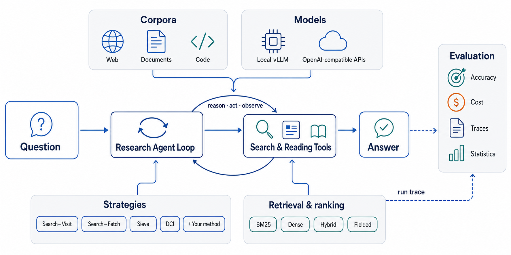
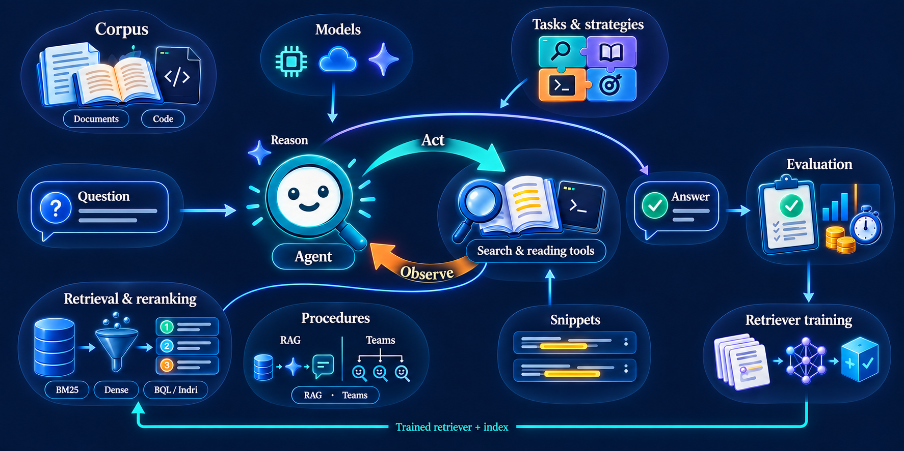

A research library for deep-search agents over your own corpus: an agent that answers hard questions by searching a fixed collection over several steps. Swap the corpus, the retrievers, the tools, tasks and strategies, the backbone, or the evaluation; one agent loop, one run record and one evaluation layer stay fixed underneath every combination.
One component changes at a time; the rest of the experiment stays fixed. Documents go in, a run record comes out, and the same evaluation layer reads every strategy's output the same way.


Documents become units: an id, a title, a body, and optional sections. One dataset registry loads them; a corpus too large for memory is served from disk instead of held in RAM.
Every retriever indexes once and searches by query. Lucene BM25, dense encoders, BQL's fielded Boolean retrieval and Indri-style structured retrieval share one engine registry per corpus; a hybrid is any of them fused by one method, and a reranked retriever is one of them with a reranker over its pool.
A tool is one atomic action with its own declaration and code, and it names the snippet its listing shows. A task is the goal and the answer protocol. A strategy combines tools with options, or is a procedure: one-shot RAG, or a team of agents. This is where most extension work happens.
One loop drives every condition: reason, act, observe, with every limit measured in tokens. An alternative driver runs the same tools through native function calling instead of parsed text.
Every run writes the same record: a full trajectory, its configuration, and its metrics. Metrics, judges and paired statistics all read that one record format, whichever strategy produced it.
Every episode is a full trajectory, so it is also training data. Triples with tiered negatives come out of any run directory and train a dense retriever that plugs back in as any strategy's dense model.
Four words cover everything you build on top of the library. Get these right and the rest of the codebase reads like the sentence they describe.
One atomic action the agent can call. A tool owns its declaration (the name and description the model sees), its code (a run function that returns text, never an exception), and, when it needs one, a manual rendered into the prompt.
The goal and the answer protocol: the prompt template, the domain, and the terminal that ends an episode, an <answer>, a <fix>, or a patch.
A named combination of tools with their options, or a procedure that uses an engine without any agent loop at all.
A task paired with a strategy. What a run names, what a config file's strategy and dataset keys resolve to, what the run record carries.
The built-in strategies, by family:
| family | strategies | what the agent does |
|---|---|---|
| search_visit | search_visit, search_visit_dense, search_visit_hybrid, search_visit_snippets | a search that lists documents, then visits the whole document |
| autoread | autoread, autoread_dense, autoread_hybrid | one search that returns the full text of its hits |
| search_fetch | search_fetch, search_fetch_dense, search_fetch_hybrid, search_fetch_bm25_plain, search_fetch_dense_plain | a search that lists structure, then fetches one section |
| sieve | sieve_bm25, sieve, sieve_dense, sieve_nosnip, sieve_plain, sieve_v2, sieve_visit, sieve_visit_fused, sieve_visit_dense | Boolean candidate filtering, one ranking model, result cards, section fetch |
| indri | indri, indri_plain, indri_visit | Indri-QL retrieval with cards and section fetch |
| dci | dci, bounded_dci | shell commands over the exported corpus |
| dedup | dedup_dense, dedup_bm25 | ITER's search, which drops already-listed documents, then reads a document by id |
| codefix | codefix, codefix_grep | Boolean code search or grep, then read a function and commit a fix |
| rag | rag, rag_dense, rag_hybrid | rank once, put the top documents in one prompt, one model call |
| retrieval-only floors | bm25, bm25_lucene, dense, bql, grep, hybrid | rank once, no agent loop, no model |
Backbones are served through four providers: OpenAI's chat and reasoning models, Gemini, any OpenAI-compatible server, and vLLM running in-process. Every one of them emits the same tool-call text the loop parses, so swapping the backbone is one YAML key.
One command runs a scripted policy against a three-document fixture with no API key and no GPU. Point it at a real model, or call the library from Python with your own documents.
# install and run, no model, no GPU python -m pip install -e ".[api]" skimsearchagent dataset=doc_fixture strategy=sieve_bm25 # the same run, with a real model export OPENAI_API_KEY=... skimsearchagent dataset=doc_fixture strategy=sieve_bm25 model=gpt-4o-mini
# or call it from Python, with your own documents
from agent_search import research
docs = [{"_id": "d1", "title": "Treaty of Guadalupe Hidalgo",
"text": "The Treaty of Guadalupe Hidalgo ended the Mexican-American War in 1848."}]
result = research("Which treaty ended the Mexican-American War?", docs,
strategy="sieve_bm25", model="gpt-4o-mini")
print(result.answer, result.ranking, result.usage)
Every extension point is a small class in one file. Here is a tool that looks documents up by title, a strategy that offers only that tool, and a condition that runs it. No edits anywhere else in the codebase.
# a tool, a strategy, a condition from agent_search.tools.base import Tool from agent_search.strategies.base import Strategy, register_strategy from agent_search.strategies.conditions import condition class TitleLookup(Tool): name = "title_lookup" description = "Documents whose title contains the words." parameters = {"type": "object", "properties": {"words": {"type": "string"}}, "required": ["words"]} def run(self, args): # self.units, self.ubyid, self.state, self.engine[...] hits = [u for u in self.units if all(w in (u.title or "").lower() for w in args["words"].lower().split())] self.state.seen.update(u.doc_id for u in hits) # first-seen order = the agent's ranking return "\n".join(f"{u.doc_id} {u.title}: {u.body}" for u in hits) or "no match" register_strategy(Strategy(name="title_only", description="look up by title", tools=(TitleLookup(name="title_lookup"),))) condition("title_agent", task="research", strategy="title_only") # run it: strategy=title_agent
Each paper is one setting of the library, with its own results, method and citation on its own page.
A Boolean-filtered search, inspect, fetch strategy: fielded candidate selection (BQL), one ranking model, compact result cards with query-biased snippets, and section-level reading instead of whole-document reading. On BrowseComp-Plus, HotpotQA and MuSiQue it matched or improved accuracy while reading substantially fewer tokens than Search-Visit.
Read the Sieve page →Interaction-aware retrieval for agentic search: a dense retriever trained from search-agent trajectories, conditioned on the agent's earlier searches and trained to return documents it has not read yet. The library carries its search tools, its training recipe, its released checkpoints and its evaluation sets.
Read the ITER page →